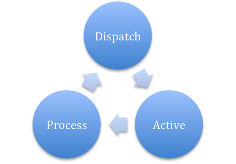

Inner happiness comes from self-sacrifice
How does it handle all the events especially the interrupt/asynchronous call by single thread. libevent/event.c, used to handle events like 'run after delay some time' and 'asynch request callback function'.
1. Eventloop maintains a heap called timeheap each node of which is an event with callback function and a registered timeout. The heap is ordered by accending order of timeout. Eventloop loops endlessly and continuesly. Active all the events whose timeout elapsed. Process all the actived events. Then run loop again.
2. If we have only first type of event 'run after delay some time', then all the new events can be only registered by current existing event. This is useful because 1. if there is no event in timeheap then we can safely stop the eventloop because there won't be any new event registered in the future. 2. if currently the most earlist event is x seconds later, then we can safely sleep eventloop by x seconds because there won't be any old/new events happen from now to x seconds later.
So in this case eventloop can be suspended smartly rather then occupying cpu all the time. But the truth is eventloop does loop all the time without sleep which suprise me. This is all because of 'asynch request callback function'.
3. Asynch request like io request may finish at any time. When it finishes, an interrupt handled by operating system which will change coresponding file descriptor to record that this request has been done. Within eventloop, before active all the events, it will first dispatch(poll) all the registered file descriptor to see if any of them have been changed. If any then the coresponding callback function will be actived and will be processed with all other actived events.
The dispatch process is usually done by epoll/select cmd which are blocked cmd. So eventloop sets a very tiny timeout for this epoll/select and suppose it complete really quick.
4. This is how evertloop handles all things by single thread. The potential problem is once some event callback functions take too long time and return before other event's timeout eslaped. Then all those following events will be delayed to be executed comparing with their registered timeout. So every event used in eventloop is supposed to be a light weighted one.
(This is the trick we found in our code. One asynch request, client side timeout is x second, server side timeout is x+y seconds. Client shows a task expire(server side timeout) ratherr then receive timeout(client side timeout) when time consumed in network is ignored. Because some events registered in client eventloop take too much time and block eventloop to run receive timeout event.)
